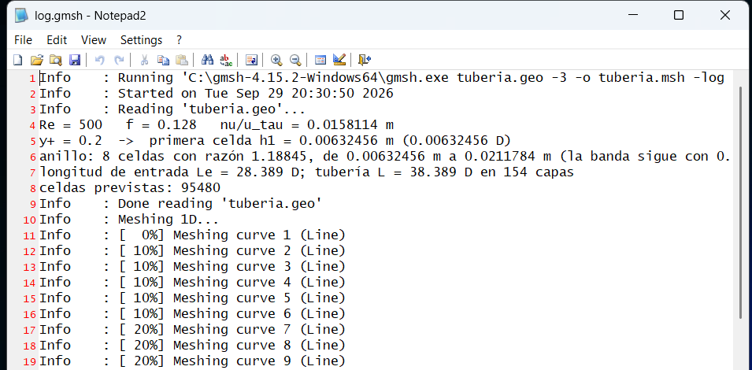
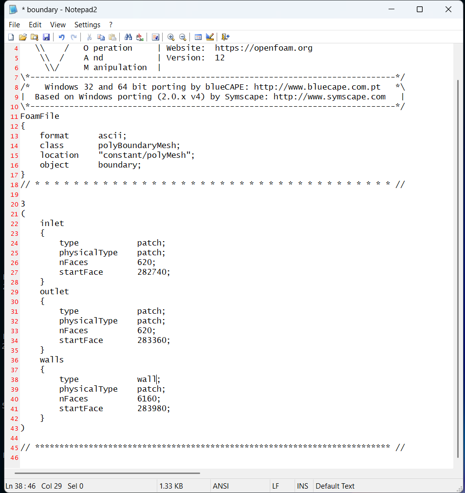
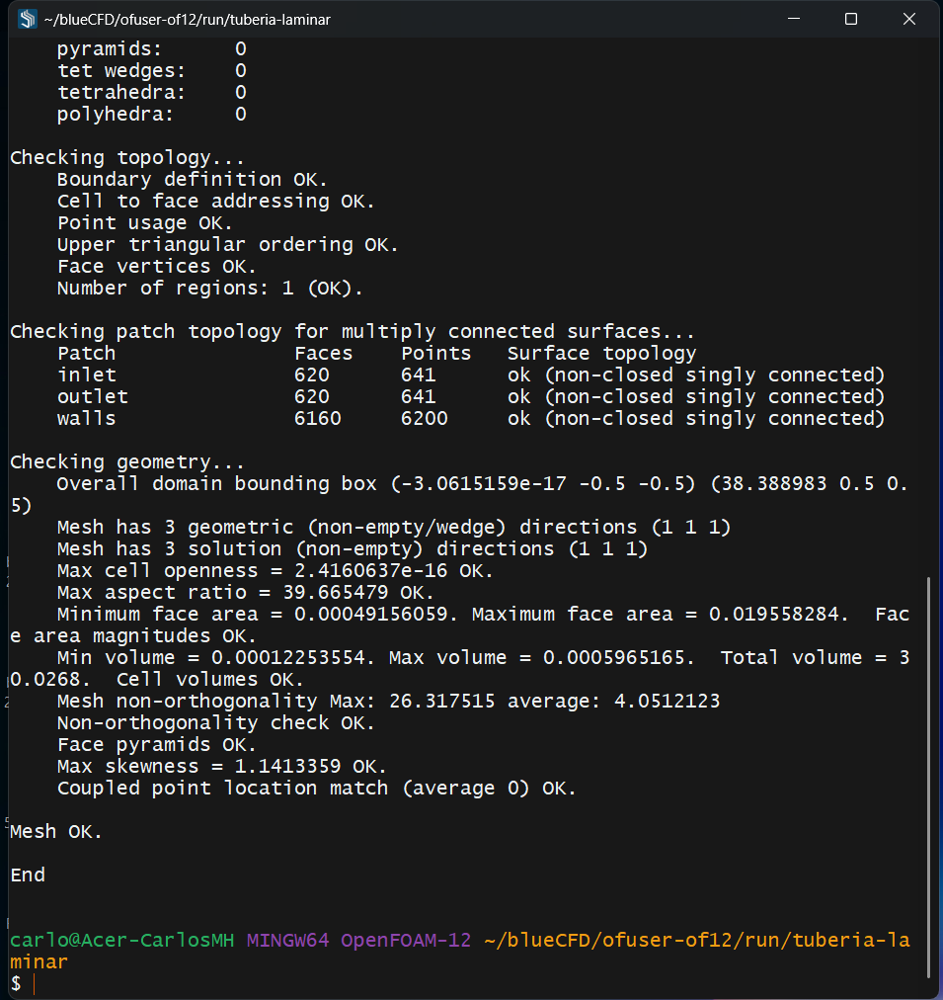
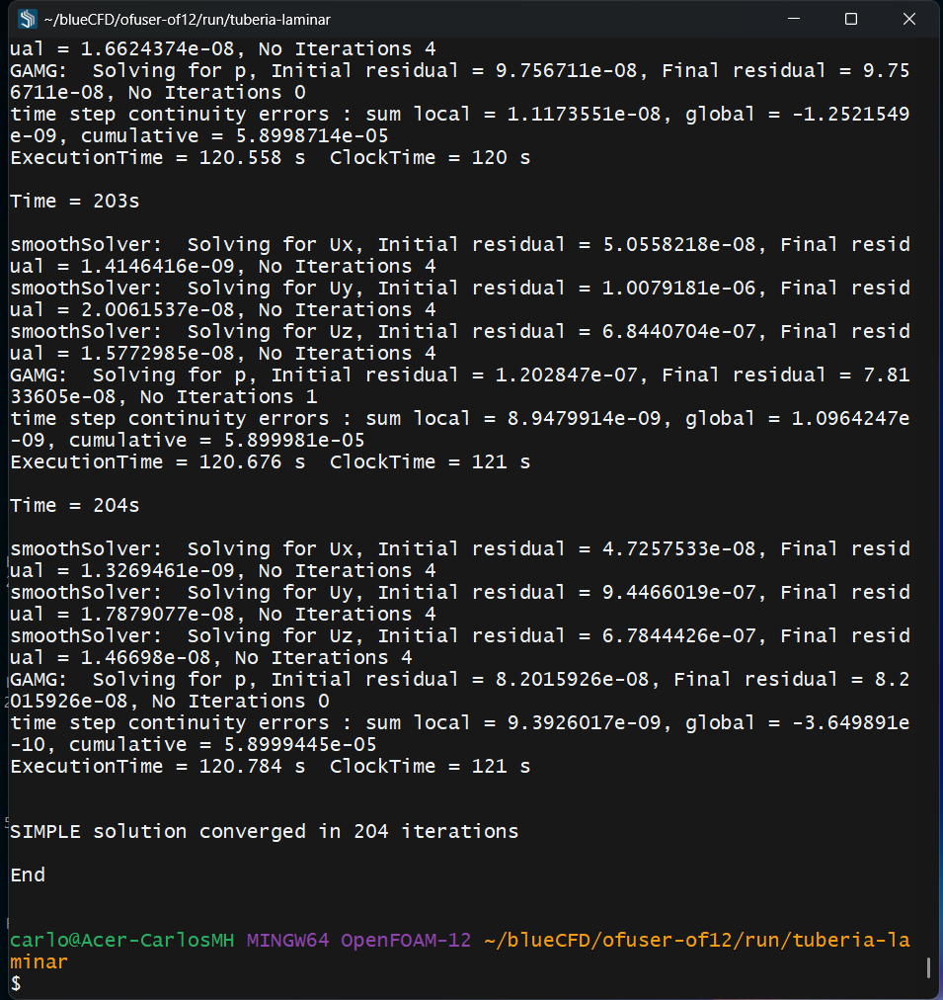
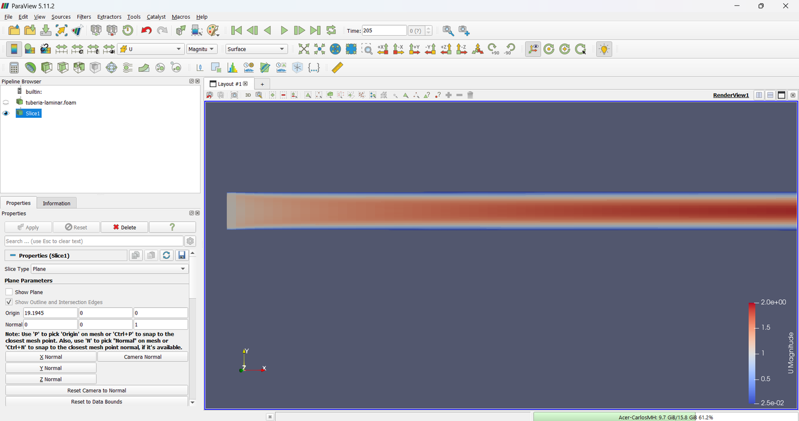
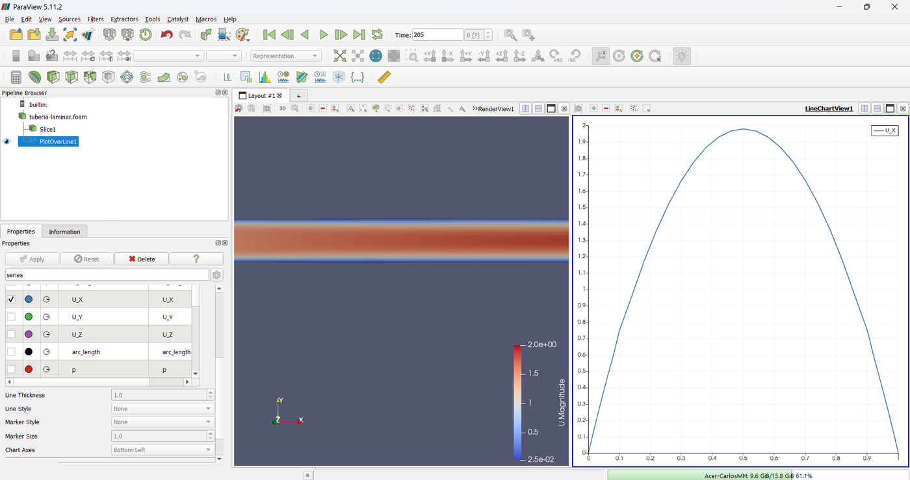

The Laminar Pipe: Hagen-Poiseuille and the Entrance Length
A uniform stream enters a straight pipe at Re = 500 and develops into the Hagen-Poiseuille parabola. The case runs with incompressibleFluid on the O-grid mesh from Gmsh, and OpenFOAM itself writes the numbers that are checked against the exact solution.
OpenFOAM · Flujo incompresible · Tutorial 1.1
La tubería laminar: Hagen-Poiseuille y la longitud de entrada
Una corriente uniforme entra a una tubería recta a Re = 500 y se desarrolla hasta la parábola de Hagen-Poiseuille. El caso corre con incompressibleFluid sobre la malla en O de Gmsh, y OpenFOAM mismo escribe las cifras que se comparan con la solución exacta.
OpenFOAM · Inkompressible Strömung · Tutorial 1.1
Das laminare Rohr: Hagen-Poiseuille und die Einlauflänge
Eine gleichförmige Strömung tritt bei Re = 500 in ein gerades Rohr ein und entwickelt sich zur Hagen-Poiseuille-Parabel. Der Fall läuft mit incompressibleFluid auf dem O-Netz aus Gmsh, und OpenFOAM schreibt selbst die Zahlen, die mit der exakten Lösung verglichen werden.
Estimated reading: 50 minLectura estimada: 50 minLesedauer: ca. 50 minLevel: undergraduateNivel: licenciaturaNiveau: BachelorVerified on OpenFOAM 12 (blueCFD-Core 2024), Gmsh 4.15.2 and ParaView 5.11.2Verificado en OpenFOAM 12 (blueCFD-Core 2024), Gmsh 4.15.2 y ParaView 5.11.2Geprüft mit OpenFOAM 12 (blueCFD-Core 2024), Gmsh 4.15.2 und ParaView 5.11.2
Full English translation in preparation. Each section below carries a summary of its content; the complete text, figures and tables are available in the Spanish version, which the ES button above selects.
Run a steady incompressible case (incompressibleFluid, SIMPLE) in OpenFOAM 12 on Windows from a Gmsh mesh; rotate the mesh with transformPoints and set the wall type by hand; read every file of the case; have OpenFOAM write the validation numbers (probes, lines, y⁺, wall shear stress); and compare them with Hagen-Poiseuille.
The problem
What is simulated
A straight pipe of D = 1 m and 38.39 D length, uniform inflow at 1 m/s, ν = 0.002 m²/s (Re = 500), zero pressure at the outlet. The mesh is the 9-block O-grid of Gmsh tutorial 3.1.2, 95,480 hexahedra.
The theory
The exact solution and the entrance length
The parabolic profile u = 2U(1 − r²/R²), the pressure gradient 32νU/D², the Darcy friction factor f = 64/Re = 0.128, the wall shear stress τw/ρ = fU²/8, the entrance length of Durst et al. (28.4 D) and the definition of y⁺.
Step by step
From the mesh to the results
In the blueCFD-Core terminal: add Gmsh to the PATH, copy the case to the run folder with the File Explorer, mesh with gmsh -log, convert with gmshToFoam, turn the pipe axis from z to x with transformPoints "Ry=90" (blueCFD-Core 2024 gets flows along z wrong), set walls to type wall in boundary with Notepad2, check with checkMesh, run foamRun (204 iterations, about two minutes) and open paraFoam. ./Allrun does all of it.
The case
The case, file by file
Every file of the case in full: tuberia.geo, the constant viscosity, the laminar model, the boundary conditions, the SIMPLEC settings with residualControl, the linearUpwind scheme, and the functions of controlDict that write probes, axis and radial lines, y⁺ and the wall shear stress.
Results
Looking at the flow in ParaView
paraFoam, Apply, Last Frame; a Slice with Z Normal coloured by U, seen from −Z and zoomed with Zoom to Box onto the entrance; and Plot Over Line across the pipe at x = 33 D with only U_X shown.
Worked example
The simulation against Hagen-Poiseuille
From the probes, f = 0.1295 against 0.128 (+1.2 %); from the wall shear stress, f = 0.1284. Centreline velocity 1.983 U against 2 U; the profile lies on the parabola within 0.028 m/s; y⁺ = 0.199 where 0.2 was asked; the centreline reaches 99 % of its final value at 25.6 D against 28.4 D from Durst et al.
Common errors
What goes wrong, and what OpenFOAM says
blueCFD-Core 2024 gets flows along z wrong (f 1.5 times too large) — hence transformPoints; forgetting the wall type; Gmsh missing from the PATH, or silent when redirected from cmd; the Open-with dialog; and Allrun refusing to rerun a program whose log exists.
Suggested exercise
Doubling the Reynolds number
Repeat the case at Re = 1000: change ν, remesh with -setnumber Re 1000 (the pipe grows because the entrance length grows) and move the probes. f should halve and the entrance length double.
Appendix
Where Hagen-Poiseuille comes from
A force balance on a cylinder of fluid gives the shear stress, the parabolic profile, the mean velocity and f = 64/Re.
Sources
References
White's Fluid Mechanics for Hagen-Poiseuille; Durst et al. (2005) for the entrance length; Van Doormaal and Raithby (1984) for SIMPLEC; the OpenFOAM 12 sources.
Objetivos de aprendizaje
Qué se debe poder hacer al terminar
En una tubería recta, lejos de la entrada, el flujo laminar tiene solución exacta: el perfil parabólico de Hagen-Poiseuille. Eso lo vuelve el primer caso ideal para aprender OpenFOAM, porque cada cifra que escribe la simulación —el factor de fricción, la velocidad en el eje, el perfil— se puede comparar con una fórmula. Cerca de la entrada, en cambio, no hay solución exacta: ahí la simulación enseña cómo se desarrolla el flujo.
Correr un caso incompresible y estacionario con incompressibleFluid en blueCFD-Core 2024 (OpenFOAM 12) en Windows.
Llevar a OpenFOAM la malla de la tubería hecha en Gmsh, girarla con transformPoints y corregir a mano el tipo de la pared.
Leer los archivos de un caso incompresible: el fluido, las condiciones de frontera, los esquemas y el control del algoritmo SIMPLE.
Hacer que OpenFOAM escriba en archivos las cifras de la validación: sondas, líneas, y⁺ y esfuerzo en la pared.
Comparar la simulación con Hagen-Poiseuille y con una correlación de la longitud de entrada, y juzgar cuándo llegó a la solución.
Qué hace falta. blueCFD-Core 2024 (bluecfd.github.io/Core), que instala OpenFOAM 12 para Windows y trae ParaView 5.11.2 y el editor Notepad2; Gmsh 4.15.2 (gmsh.info), el archivo comprimido para Windows, descomprimido en una carpeta cualquiera; y el caso, tuberia-laminar.zip, cuyos archivos se reproducen completos en la sección «El caso, archivo por archivo». No hace falta programar.
De dónde sale la malla. Es la del tutorial 3.1.2 de Gmsh: una sección en O de nueve bloques con la primera celda calculada desde y⁺ y la longitud calculada desde el número de Reynolds. Aquí se usa tal cual; lo nuevo es todo lo que pasa en OpenFOAM. El caso se validó en OpenFOAM 13 (openfoam.org, en Linux) y en OpenFOAM 12 (blueCFD-Core, en Windows) con las mismas cifras en cinco dígitos. Todas las cifras y capturas de esta guía son de OpenFOAM 12, que es lo que usan los alumnos.
El problema
Qué se va a simular
Una tubería recta de sección circular, de diámetro D = 1 m. Por la entrada llega un fluido con velocidad uniforme de 1 m/s; por la salida sale a presión cero. La viscosidad cinemática, 0.002 m²/s, da un número de Reynolds de 500: el flujo es laminar (figura 1).
Figura 1.La tubería. No está a escala: la tubería mide 38.39 D de largo. La malla se hizo con el eje en z y se giró al eje x con transformPoints (sección «Paso a paso»). Las sondas y el perfil están en la zona desarrollada, pasada la longitud de entrada.
El flujo pasa por dos etapas:
La región de entrada. En la pared la velocidad es cero; en la entrada, uniforme. Desde la pared crece una capa límite, y como el caudal no cambia, el núcleo central se acelera. El perfil pasa poco a poco de plano a parabólico.
La región desarrollada. Pasada la longitud de entrada, el perfil ya no cambia a lo largo del eje. Ahí vale la solución de Hagen-Poiseuille, y la presión baja en línea recta.
El .geo calcula la longitud de la tubería como la longitud de entrada de la correlación de Durst et al. (2005) más 10 D de tramo desarrollado: 38.389 D. Las dos sondas de presión y velocidad están en ese tramo final, en x = 30 D y x = 36 D, y el perfil de velocidad se mide en x = 33 D.
Dato
Valor
Dónde se fija
Diámetro, \(D\)
1 m
tuberia.geo: D
Velocidad media, \(U\)
1 m/s, uniforme en la entrada
0/U
Viscosidad cinemática, \(\nu\)
0.002 m²/s
constant/physicalProperties
Número de Reynolds, \(UD/\nu\)
500
tuberia.geo: Re
Longitud de la tubería
38.389 D (longitud de entrada de Durst más 10 D)
tuberia.geo: Ldes
Primera celda junto a la pared
y⁺ = 0.2: altura 0.00632 m
tuberia.geo: yplus
Malla
95 480 hexaedros; 154 capas a lo largo del eje
tuberia.geo: nq, dz
Presión en la salida
0 (presión cinemática, p/ρ)
0/p
Tabla 1.Datos del caso. Las dimensiones salen de tuberia.geo con sus valores por omisión; el fluido y las condiciones de frontera, de los archivos de constant/ y 0/ (sección «El caso, archivo por archivo»).
A diferencia de la rampa de la serie compresible, esta malla es 3D: la sección en O se extruye a lo largo del eje. Por eso ninguna frontera es empty; hay sólo tres parches: inlet, outlet y walls.
La teoría
La solución exacta y la longitud de entrada
La validación compara la simulación con la solución de Hagen-Poiseuille (White, 2011). Aquí están las fórmulas; de dónde salen está en el apéndice. OpenFOAM, en un caso incompresible, trabaja con la presión cinemática, \(p/\rho\), en m²/s²: todas las fórmulas se escriben así.
El flujo desarrollado
Con \(R = D/2\) y \(U\) la velocidad media, el perfil es una parábola, y la velocidad en el eje vale el doble de la media:
No hay solución exacta para la región de entrada. La correlación de Durst et al. (2005), ajustada a simulaciones, da la distancia a la que la velocidad del eje llega al 99 % de su valor desarrollado:
A Re = 500 da 28.39 D. Para Re grande, la ecuación (5) tiende a la regla conocida \(L_e \approx 0.057\,Re\,D\); el término 0.619 importa sólo con Re pequeño.
y⁺ y la primera celda
y⁺ es la distancia a la pared medida en «longitudes viscosas»:
En un flujo laminar y⁺ no cambia la física; el .geo lo usa sólo para fijar la altura de la primera celda, y el mismo archivo sirve después para el caso turbulento del tutorial 1.2, donde sí importa. Con y⁺ = 0.2 y \(f = 64/Re\), la primera celda mide 0.00632 m (el y⁺ se refiere al centro de la celda, así que la altura es el doble de \(y\)).
Paso a paso
De la malla a los resultados
Todo se hace en la terminal de blueCFD-Core y en el Explorador de archivos de Windows. Es la misma secuencia que sigue el vídeo del tutorial.
Descomprimir el caso. Descomprimir tuberia-laminar.zip en la carpeta Descargas: queda una carpeta tuberia-laminar con tuberia.geo, Allrun, Allrun.bat y las carpetas 0, constant y system.
Abrir la terminal. En el menú Inicio, blueCFD-Core 2024 ▸ blueCFD-Core terminal. Es una terminal bash: las rutas se escriben con diagonales normales y la unidad como carpeta, de modo que C:\gmsh-4.15.2-Windows64 es /c/gmsh-4.15.2-Windows64.
Agregar Gmsh a la ruta de búsqueda. La terminal arranca sin Gmsh: gmsh --version responde bash: gmsh: command not found. Si Gmsh se descomprimió en C:\gmsh-4.15.2-Windows64:
Ahora responde 4.15.2. Hay que hacerlo cada vez que se abre la terminal.
Copiar el caso a la carpeta de corridas. En el Explorador: hacer clic en la carpeta tuberia-laminar, Ctrl + C, escribir en la barra de direcciones la carpeta run de blueCFD (en la computadora de referencia, D:\blueCFD-Core\2024\ofuser-of12\run; depende de dónde se instaló) y Ctrl + V. Es la carpeta a la que apunta $FOAM_RUN, fuera de OneDrive y de las carpetas sincronizadas, que estorban a un programa que escribe cientos de archivos. En la terminal:
cd $FOAM_RUN/tuberia-laminar
Hacer la malla.-3 pide la malla 3D; -o, el archivo de salida; -log, que el registro se guarde además en un archivo:
gmsh tuberia.geo -3 -o tuberia.msh -log log.gmsh
Termina en menos de un segundo. En la terminal pasan las líneas Info del mallado; en log.gmsh, abierto con doble clic en el Explorador (figura 2), están arriba las cifras que calculó el .geo:
Re = 500 f = 0.128 nu/u_tau = 0.0158114 m
y+ = 0.2 -> primera celda h1 = 0.00632456 m (0.00632456 D)
anillo: 8 celdas con razón 1.18845, de 0.00632456 m a 0.0211784 m (la banda sigue con 0.04 m)
longitud de entrada Le = 28.389 D; tubería L = 38.389 D en 154 capas
celdas previstas: 95480
Convertirla a OpenFOAM.gmshToFoam tuberia.msh escribe constant/polyMesh. Responde cuántas celdas leyó y qué nombre dio a cada parche:
Patch 0 gets name inlet
Patch 1 gets name outlet
Patch 2 gets name walls
Girar la malla. El .geo construye la tubería a lo largo de z. Con blueCFD-Core 2024 hay que girarla para que el eje quede en x (el porqué está en «Errores frecuentes»): la rotación de 90° alrededor de y lleva z a x.
transformPoints "Ry=90"
Responde con la ruta de los puntos que reescribió y «End»:
Writing points into directory "D:/blueCFD-Core/2024/ofuser-of12/RUN/of12-tuberia-laminar/constant/polyMesh"
End
Cambiar el tipo de la pared.gmshToFoam declara los tres parches como patch, un tipo genérico; la pared debe ser wall. En el Explorador, entrar a constant\polyMesh y abrir boundary con doble clic. Como no tiene extensión, Windows pregunta con qué abrirlo: elegir «Notepad2 x64» y «Just once» (figura 3). En el bloque de walls, cambiar patch; por wall; en el renglón de type, sin tocar physicalType, y guardar con Ctrl + S (figura 4).
Revisar la malla.checkMesh | tee log.checkMesh (tee muestra la salida y a la vez la guarda). Lo importante está al final:
La caja del dominio confirma el giro: x va de 0 a 38.389, y y z de −0.5 a 0.5 (figura 5).
Correr el solver.foamRun | tee log.foamRun. foamRun lee en system/controlDict el solver incompressibleFluid y hace iteraciones de SIMPLE hasta que los residuos bajan de los límites de system/fvSolution. En la computadora de referencia tardó 133 s y terminó con (figura 6):
SIMPLE solution converged in 204 iterations
End
Ver los resultados.paraFoam abre ParaView con el caso (sección «Resultados»); las cifras se leen de los archivos de postProcessing (sección «Ejemplo resuelto»).

Figura 2.El registro de Gmsh. Renglones 4 a 8 de log.gmsh: lo que calculó tuberia.geo antes de mallar. La última cifra, 95 480 celdas, es la que confirma checkMesh.Figura 3.Abrir un archivo sin extensión. Windows no sabe con qué abrir boundary y pregunta. Notepad2 viene con blueCFD-Core; «Just once» lo usa esta vez sin asociarlo al tipo de archivo.

Figura 4.El tipo de la pared, a mano. En constant/polyMesh/boundary, el parche walls pasa de patch a wall; inlet y outlet se quedan como patch. El asterisco del título indica que falta guardar (Ctrl + S).

Figura 5.checkMesh, después del giro. La caja del dominio va de x = 0 a 38.389 en x, y de −0.5 a 0.5 en y y en z: el eje de la tubería ya es x. No ortogonalidad máxima 26.3°; «Mesh OK».

Figura 6.El final de foamRun. Las últimas iteraciones y el aviso de convergencia. A la derecha, en el Explorador, aparecen la carpeta 204 con los campos finales y postProcessing.
Lo que escribe foamRun
Cada iteración deja un bloque como éste (la primera de la corrida):
Time = 1s
smoothSolver: Solving for Ux, Initial residual = 1, Final residual = 0.085115331, No Iterations 2
smoothSolver: Solving for Uy, Initial residual = 0.99999528, Final residual = 0.073667552, No Iterations 2
smoothSolver: Solving for Uz, Initial residual = 0.99995382, Final residual = 0.075523414, No Iterations 2
GAMG: Solving for p, Initial residual = 1, Final residual = 0.040222305, No Iterations 210
time step continuity errors : sum local = 2.1822104e-05, global = -4.6766519e-06, cumulative = -4.6766519e-06
ExecutionTime = 2.577 s ClockTime = 3 s
Time = 1s: en un caso estacionario el «tiempo» es el número de iteración; deltaT 1 en controlDict.
smoothSolver: Solving for Ux, Uy, Uz: la ecuación de cantidad de movimiento, una por componente. Initial residual es el residuo antes de resolver en esa iteración; es el que se usa para juzgar la convergencia.
GAMG: Solving for p: la ecuación de la presión, que corrige la velocidad para que se conserve la masa.
time step continuity errors: cuánto falla la conservación de la masa después de la corrección; debe ser pequeño y no crecer.
Todo en un comando
Los pasos 5 a 10 están en Allrun, que en lugar de editar boundary a mano usa foamDictionary:
./Allrun
Deja la salida de cada programa en log.gmsh, log.gmshToFoam, log.transformPoints, log.checkMesh y log.foamRun. ./Allrun 4 corre en paralelo con cuatro procesos, cortando la tubería en cuatro rebanadas a lo largo del eje. Allrun.bat hace lo mismo, en serie, en la terminal cmd de blueCFD.
El caso
El caso, archivo por archivo
Los diccionarios son los de las corridas que validaron la malla en el tutorial 3.1.2 de Gmsh, con tres cosas que OpenFOAM 12 pide y el 13 acepta: application foamRun en controlDict, viscosityModel constant en physicalProperties y method en decomposeParDict.
tuberia.geo: la malla
El archivo del tutorial 3.1.2 de Gmsh, sin cambios. Los parámetros de DefineConstant —régimen, número de Reynolds, diámetro, y⁺ de la primera celda, razón de crecimiento, tramo desarrollado, celdas por cuarto y tamaño axial— se cambian desde la terminal con -setnumber. Cómo se construye está explicado paso a paso en el 3.1.1 y el 3.1.2 de esa serie.
tuberia.geo
// Tubería recta parametrizada (tutorial 3.1.2): la sección en O de 9 bloques del 3.1.1, con la primera celda
// calculada desde y+ y la longitud desde el número de Reynolds. Unidades: metros.
// Cada parámetro se cambia en el panel «Tubería» de la interfaz o desde la terminal. En los rótulos no puede ir
// una diagonal: Gmsh la toma como separador de ramas del panel.
// gmsh tuberia.geo -3 -setnumber regimen 1 -setnumber Re 50000 -o tuberia.msh
SetFactory("Built-in");
DefineConstant[
regimen = {0, Choices{0 = "Laminar", 1 = "Turbulento"}, Name "Tubería/1Régimen"},
Re = {500, Name "Tubería/2Número de Reynolds"},
D = {1, Name "Tubería/3Diámetro D (m)"},
yplus = {0.2, Name "Tubería/4y+ de la primera celda"},
gmax = {1.2, Name "Tubería/5Razón de crecimiento"},
Ldes = {10, Name "Tubería/6Tramo tras la entrada (D)"},
nq = {10, Name "Tubería/7Celdas por cuarto"},
dz = {0.25, Name "Tubería/8Celda axial Δz (D)"}
];
// ------------------------------------------------ geometría de la sección (proporciones del 3.1.1)
R = D / 2;
rm = 0.8 * R; // círculo intermedio: el anillo de la capa límite ocupa el 20 % exterior del radio
a = 0.4 * R; // semilado del cuadro central
// ------------------------------------------------ factor de fricción y velocidad de fricción
// Laminar: Hagen-Poiseuille. Turbulento (tubo liso): Petukhov, válido de 3000 a 5·10^6.
If (regimen == 0)
f = 64 / Re;
Else
f = 1 / (0.790 * Log(Re) - 1.64)^2;
EndIf
// u_tau / U = Sqrt(f/8); en longitudes: nu / u_tau = D / (Re Sqrt(f/8))
lv = D / (Re * Sqrt(f / 8)); // longitud viscosa nu/u_tau (m)
// y+ mide la distancia del CENTRO de la primera celda a la pared: la altura es el doble.
h1 = 2 * yplus * lv;
// ------------------------------------------------ longitud: entrada más tramo desarrollado
If (regimen == 0)
Le = D * (0.619^1.6 + (0.0567 * Re)^1.6)^(1 / 1.6); // Durst et al. (2005)
Else
Le = D * 4.4 * Re^(1 / 6); // White, Fluid Mechanics
EndIf
L = Le + Ldes * D;
// ------------------------------------------------ nodos de la sección
hs = 2 * a / nq; // lado de las celdas del cuadro central
nr = Round((rm - a) / hs); // celdas de la banda, del cuadro al círculo intermedio
// El anillo va de h1 en la pared hacia el círculo intermedio, creciendo a lo más gmax por celda. La suma de la
// progresión, h1 (g^n − 1)/(g − 1) = t, da el número de celdas n; se redondea hacia arriba y la macro Razon (la del
// 2.2.2) busca por bisección la razón exacta que llena el anillo con esas n celdas.
Macro Razon
rA = 1.0 + 1.e-9; rB = 3.0;
For iter In {1:80}
rM = 0.5 * (rA + rB);
sM = eh1 * (rM^(eN - 1) - 1.0) / (rM - 1.0);
If (sM < eL)
rA = rM;
Else
rB = rM;
EndIf
EndFor
eR = 0.5 * (rA + rB);
Return
eL = R - rm; eh1 = h1;
eN = 1 + Ceil(Log(1 + eL * (gmax - 1) / h1) / Log(gmax));
Call Razon;
nb = eN; g = eR; // nodos del anillo y razón de crecimiento desde la pared
hN = h1 * g^(nb - 2); // la celda del anillo junto al círculo intermedio
hb = (rm - a) / nr; // la celda de la banda, a media altura del cuadro
nz = Round(L / (dz * D)); // capas a lo largo del eje
N3 = (nq^2 + 4 * nq * nr + 4 * nq * (nb - 1)) * nz;
Printf("Re = %g f = %g nu/u_tau = %g m", Re, f, lv);
Printf("y+ = %g -> primera celda h1 = %g m (%g D)", yplus, h1, h1 / D);
Printf("anillo: %g celdas con razón %g, de %g m a %g m (la banda sigue con %g m)", nb - 1, g, h1, hN, hb);
Printf("longitud de entrada Le = %g D; tubería L = %g D en %g capas", Le / D, L / D, nz);
Printf("celdas previstas: %g", N3);
// ------------------------------------------------ puntos, curvas y superficies (como el 3.1.1)
Point(1) = {0, 0, 0};
Point(2) = {a, a, 0}; Point(3) = {-a, a, 0}; Point(4) = {-a, -a, 0}; Point(5) = {a, -a, 0};
Point(6) = {rm*Cos(Pi/4), rm*Sin(Pi/4), 0}; Point(7) = {-rm*Cos(Pi/4), rm*Sin(Pi/4), 0};
Point(8) = {-rm*Cos(Pi/4), -rm*Sin(Pi/4), 0}; Point(9) = {rm*Cos(Pi/4), -rm*Sin(Pi/4), 0};
Point(10) = {R*Cos(Pi/4), R*Sin(Pi/4), 0}; Point(11) = {-R*Cos(Pi/4), R*Sin(Pi/4), 0};
Point(12) = {-R*Cos(Pi/4), -R*Sin(Pi/4), 0}; Point(13) = {R*Cos(Pi/4), -R*Sin(Pi/4), 0};
Line(1) = {2, 3}; Line(2) = {3, 4}; Line(3) = {4, 5}; Line(4) = {5, 2}; // cuadro central
Line(5) = {2, 6}; Line(6) = {3, 7}; Line(7) = {4, 8}; Line(8) = {5, 9}; // cuadro → círculo intermedio
Line(9) = {6, 10}; Line(10) = {7, 11}; Line(11) = {8, 12}; Line(12) = {9, 13}; // círculo intermedio → pared
Circle(13) = {6, 1, 7}; Circle(14) = {7, 1, 8}; Circle(15) = {8, 1, 9}; Circle(16) = {9, 1, 6};
Circle(17) = {10, 1, 11}; Circle(18) = {11, 1, 12}; Circle(19) = {12, 1, 13}; Circle(20) = {13, 1, 10};
Curve Loop(1) = {1, 2, 3, 4}; Plane Surface(1) = {1};
Curve Loop(2) = {1, 6, -13, -5}; Plane Surface(2) = {2};
Curve Loop(3) = {2, 7, -14, -6}; Plane Surface(3) = {3};
Curve Loop(4) = {3, 8, -15, -7}; Plane Surface(4) = {4};
Curve Loop(5) = {4, 5, -16, -8}; Plane Surface(5) = {5};
Curve Loop(6) = {13, 10, -17, -9}; Plane Surface(6) = {6};
Curve Loop(7) = {14, 11, -18, -10}; Plane Surface(7) = {7};
Curve Loop(8) = {15, 12, -19, -11}; Plane Surface(8) = {8};
Curve Loop(9) = {16, 9, -20, -12}; Plane Surface(9) = {9};
// ------------------------------------------------ malla: todos los números salen de los parámetros
Transfinite Curve {1:4, 13:20} = nq + 1;
Transfinite Curve {5:8} = nr + 1;
Transfinite Curve {9:12} = nb Using Progression 1 / g; // las líneas van hacia la pared: cada celda 1/g de la anterior
Transfinite Surface {1:9};
Recombine Surface {1:9};
ext[] = Extrude {0, 0, L} { Surface{1:9}; Layers{nz}; Recombine; };
Physical Surface("inlet") = {1:9};
Physical Surface("outlet") = {ext[0], ext[6], ext[12], ext[18], ext[24], ext[30], ext[36], ext[42], ext[48]};
Physical Surface("walls") = {ext[34], ext[40], ext[46], ext[52]};
Physical Volume("fluid") = {ext[1], ext[7], ext[13], ext[19], ext[25], ext[31], ext[37], ext[43], ext[49]};
Mesh.MshFileVersion = 2.2;
constant/physicalProperties y constant/momentumTransport: el fluido
constant/physicalProperties
FoamFile
{
format ascii;
class dictionary;
location "constant";
object physicalProperties;
}
// * * * * * * * * * * * * * * * * * * * * * * * * * * * * * * * * * * * * * //
viscosityModel constant;
nu [0 2 -1 0 0 0 0] 0.002; // Re = U D / nu = 500 con U = 1 m/s y D = 1 m
// ************************************************************************* //
viscosityModel constant con nu es un fluido newtoniano de viscosidad constante; como el caso es incompresible, no hace falta la densidad. simulationType laminar significa sin modelo de turbulencia: se resuelven las ecuaciones de Navier-Stokes tal cual.
0/U y 0/p: el estado inicial y las condiciones de frontera
0/U
FoamFile
{
format ascii;
class volVectorField;
location "0";
object U;
}
// * * * * * * * * * * * * * * * * * * * * * * * * * * * * * * * * * * * * * //
dimensions [0 1 -1 0 0 0 0];
internalField uniform (1 0 0); // a lo largo de x, el eje de la tubería
boundaryField
{
inlet
{
type fixedValue; // perfil uniforme: la tubería lo desarrolla
value uniform (1 0 0);
}
outlet
{
type zeroGradient;
}
walls
{
type noSlip;
}
}
// ************************************************************************* //
Entrada: velocidad fija, uniforme, (1 0 0) —el eje es x después del giro—; presión con gradiente cero, que la deja libre para ajustarse al flujo.
Salida: presión fija en 0, que sirve de referencia (en un caso incompresible sólo importan las diferencias de presión); velocidad con gradiente cero.
Pared:noSlip, velocidad cero; presión con gradiente cero.
El campo inicial (1 0 0) en todo el dominio es sólo el punto de partida de las iteraciones; la solución final no depende de él.
system/controlDict: la corrida y lo que se escribe
system/controlDict
FoamFile
{
format ascii;
class dictionary;
location "system";
object controlDict;
}
// * * * * * * * * * * * * * * * * * * * * * * * * * * * * * * * * * * * * * //
application foamRun;
solver incompressibleFluid;
startFrom startTime;
startTime 0;
stopAt endTime;
endTime 2000; // tope: SIMPLE se detiene antes, al cumplir residualControl
deltaT 1;
writeControl timeStep;
writeInterval 2000; // sólo se escribe la iteración final
purgeWrite 0;
writeFormat ascii;
writePrecision 8;
writeCompression off;
timeFormat general;
timePrecision 6;
runTimeModifiable true;
functions
{
// residuales de cada iteración: postProcessing/residuales/0/residuals.dat
#includeFunc residuals(name=residuales, p, U)
// p y U en el eje, en x = 30 D y x = 36 D (zona desarrollada), en cada iteración:
// postProcessing/sondas/0/p y postProcessing/sondas/0/U. De ahí salen dp/dx y el factor de fricción.
#includeFunc probes(name=sondas, points=((30 0 0) (36 0 0)), fields=(p U))
// p y U a lo largo del eje: postProcessing/eje/<iteración final>/line.xy
#includeFunc graphUniform(name=eje, start=(0.05 0 0), end=(38.3 0 0), nPoints=400, fields=(p U), axis=x)
// perfil de velocidad en x = 33 D, del eje a la pared: postProcessing/radial/<iteración final>/line.xy
#includeFunc graphUniform(name=radial, start=(33 0 0), end=(33 0.49999 0), nPoints=200, fields=(U), axis=y)
// campos wallShearStress y yPlus en la iteración final; su mínimo y máximo en la pared (y el promedio de
// y+) quedan en postProcessing/wallShearStress/0/wallShearStress.dat y postProcessing/yPlus/0/yPlus.dat
#includeFunc wallShearStress
#includeFunc yPlus
}
// ************************************************************************* //
solver incompressibleFluid: el solver de flujo incompresible de OpenFOAM 12; foamRun lo lee de aquí.
endTime 2000: un tope que no se alcanza. La corrida termina antes, cuando se cumple residualControl.
writeInterval 2000: con el tope tan alto, sólo se escribe la iteración final, la de la convergencia. Así la carpeta del caso no se llena de carpetas intermedias.
functions: seis funciones que corren junto con el solver. residuals guarda los residuos de cada iteración; probes, p y U en dos puntos del eje en cada iteración; los dos graphUniform, p y U a lo largo del eje y del eje a la pared en x = 33 D; wallShearStress y yPlus, el esfuerzo en la pared y y⁺. Son las cifras de la validación.
steadyState: no hay término temporal. El término de convección usa linearUpwind, de segundo orden, con la corrección bounded que se recomienda en casos estacionarios. Los gradientes y las laplacianas son lineales, de segundo orden; corrected agrega la corrección por no ortogonalidad, que en esta malla llega a 26.3°. wallDist indica cómo calcular la distancia a la pared, que usa yPlus.
GAMG para p, un solver multimalla, el más rápido para la ecuación de presión; smoothSolver para U.
consistent yes: la variante SIMPLEC del algoritmo (Van Doormaal y Raithby, 1984), que permite relajar menos la presión y converge en menos iteraciones.
residualControl: la corrida se detiene cuando el residuo inicial de p baja de 10−5 y el de U de 10−6, a la vez.
relaxationFactors: cada iteración avanza sólo 0.9 del cambio calculado para U; con SIMPLEC la presión no necesita relajación.
Allrun
Allrun
#!/bin/sh
# Tubería laminar, Re = 500. OpenFOAM 12 (blueCFD-Core 2024) u OpenFOAM 13.
# Uso, desde la carpeta del caso: ./Allrun en serie
# ./Allrun 4 en paralelo, con 4 procesos
# Hace lo mismo que la receta paso a paso: malla con Gmsh, gmshToFoam, giro de la malla al eje x, tipo del
# parche de la pared, checkMesh y foamRun. Gmsh tiene que estar en el PATH.
cd ${0%/*} || exit 1
. $WM_PROJECT_DIR/bin/tools/RunFunctions
n=${1:-1}
command -v gmsh > /dev/null || {
echo "No se encuentra gmsh: agregue su carpeta al PATH, por ejemplo"
echo ' export PATH="$PATH:/c/gmsh-4.15.2-Windows64"'
exit 1
}
gmsh tuberia.geo -3 -o tuberia.msh -log log.gmsh > /dev/null 2>&1 || { echo "Falló Gmsh: revise log.gmsh"; exit 1; }
runApplication gmshToFoam tuberia.msh
# el eje de la tubería, de z a x: blueCFD-Core 2024 (OpenFOAM 12) resuelve mal los flujos a lo largo de z
runApplication transformPoints "Ry=90"
foamDictionary constant/polyMesh/boundary -entry entry0/walls/type -set wall
runApplication checkMesh
if [ "$n" -gt 1 ]; then
foamDictionary system/decomposeParDict -entry numberOfSubdomains -set $n
foamDictionary system/decomposeParDict -entry simpleCoeffs/n -set "($n 1 1)"
runApplication decomposePar
runParallel foamRun
runApplication reconstructPar -latestTime
else
runApplication foamRun
fi
runApplication, de OpenFOAM, corre cada programa y guarda su salida en log.<programa>. foamDictionary … -entry entry0/walls/type -set wall hace lo mismo que el paso 8 de la receta: en el archivo boundary, que es una lista, entry0 es la lista misma.
Resultados
Ver el flujo en ParaView
ParaView sirve para ver el flujo y comprobar que tiene la forma esperada; las cifras se leen de los archivos (sección siguiente).
Un corte a lo largo del eje
En la terminal, dentro de la carpeta del caso, paraFoam. Abre ParaView con tuberia-laminar.foam en el Pipeline Browser.
Apply, y Last Frame (⏭) para pasar a la iteración final, 204.
El botón Slice de la barra de filtros comunes. En Properties: Z Normal, para que el corte sea el plano x-y, que contiene el eje; desmarcar Show Plane, para que el plano interactivo no tape la vista; Apply.
En el desplegable de variables de la barra de herramientas, elegir U.
-Z en la barra de la cámara: la vista mira el plano x-y de frente, con la entrada a la izquierda. Reset Camera encuadra la tubería entera, que se ve como una tira delgada: mide 38.4 D de largo y 1 D de ancho.
Para ver la entrada: la casilla Zoom to Box de la barra de la vista, y un recuadro con el botón izquierdo sobre la primera mitad de la tira (figura 7).

Figura 7.El corte longitudinal, cerca de la entrada.Slice con Z Normal, coloreado con U y visto desde -Z; acercado con Zoom to Box a los primeros 15 D. El perfil uniforme de la entrada (izquierda) se convierte poco a poco en un núcleo rápido rodeado de capa límite.
Junto a la pared el fluido está quieto (azul); en la entrada el perfil es uniforme y, hacia la derecha, el núcleo se acelera hasta casi el doble de la velocidad media (rojo).
El perfil a lo ancho de la tubería
Hacer clic en tuberia-laminar.foam en el Pipeline Browser: el filtro siguiente debe aplicarse al caso completo, no al corte.
Filters ▸ Data Analysis ▸ Plot Over Line.
Point1 = (33, −0.49999, 0) y Point2 = (33, 0.49999, 0): una recta que cruza la tubería en x = 33 D (figura 8). Los extremos quedan a 0.00001 m de la pared para que caigan dentro de la malla.
Apply. La ventana se divide y a la derecha aparece una gráfica con todas las variables.
Para dejar sólo la componente axial: escribir series en el buscador de Properties, desmarcar la casilla del encabezado de la tabla de series (desmarca todas) y marcar U_X (figura 9).
Figura 8.Plot Over Line a lo ancho de la tubería. Con tuberia-laminar.foam seleccionado en el Pipeline Browser: Point1 = (33, −0.49999, 0) y Point2 = (33, 0.49999, 0).

Figura 9.El perfil en ParaView. Sólo U_X marcada en la tabla de series. El eje horizontal es la distancia a lo largo de la recta, de una pared a la otra.
La gráfica es la parábola de la ecuación (1): cero en las dos paredes y casi 2 en el centro.
Ejemplo resuelto
La simulación contra Hagen-Poiseuille
Enunciado. Comprobar que la simulación reproduce la solución de Hagen-Poiseuille en la zona desarrollada, y comparar la longitud de entrada con la correlación de Durst et al. Condiciones: el caso sin cambios, Re = 500; los valores de la última iteración, 204.
El factor de fricción, de las sondas
En postProcessing/sondas/0/p hay una fila por iteración con la presión en las dos sondas. Las primeras líneas dicen dónde está cada una; la última fila es la de la convergencia:
contra 64/Re = 0.1280: una diferencia de +1.2 %. La presión en el eje tiene justo la forma que se espera: curva cerca de la entrada, donde además de la fricción hay que acelerar el núcleo, y una recta en la zona desarrollada (figura 10).
Figura 10.La presión a lo largo del eje. Archivo postProcessing/eje/204/line.xy, columna p. En la zona desarrollada la presión baja en línea recta, con la pendiente de Hagen-Poiseuille; cerca de la entrada baja más rápido, porque además de vencer la fricción tiene que acelerar el núcleo. La recta pasa por las dos sondas, en x = 30 y 36 D.
El factor de fricción, de la pared
postProcessing/wallShearStress/0/wallShearStress.dat da el mínimo y el máximo de cada componente del esfuerzo en la pared (en m²/s², dividido entre ρ):
# Wall shear stress
# Time patch min max
2.04000000e+02 walls (-9.26508760e-02 -1.42105875e-02 -1.44055181e-02) (-1.60554667e-02 1.42105875e-02 1.44055181e-02)
La componente x es negativa: el esfuerzo que el fluido recibe de la pared se opone al flujo. Su valor más pequeño en magnitud, 0.016055 m²/s², es el de la zona desarrollada; cerca de la entrada, donde la capa límite es delgada, es hasta seis veces mayor. Con la ecuación (4), \(f = 8\tau_w/(\rho U^2)\) = 0.1284 (+0.3 %). Las dos maneras de medir f coinciden con la teoría y entre sí.
En la segunda sonda, \(u_c\) = 1.9828 U contra 2 U (−0.9 %); en la primera, 1.9748 U: la velocidad del eje todavía crece un poco entre las dos. La figura 11 la muestra a lo largo de toda la tubería, con los datos de postProcessing/eje. Llega al 99 % de su valor en la segunda sonda en x = 25.6 D; la ecuación (5) da 28.4 D.
Figura 11.La velocidad en el eje. El mismo archivo de la figura 10 (postProcessing/eje/204/line.xy), columna U_x. El perfil uniforme de la entrada se desarrolla: la capa límite crece desde la pared y el núcleo se acelera para conservar el caudal. La velocidad del eje llega al 99 % de su valor final en x = 25.6 D; la correlación de Durst et al. (2005) da 28.4 D.
La longitud de entrada es la comparación más floja de este ejemplo, por tres razones: la velocidad del eje se acerca a su valor final muy despacio, así que un error pequeño en ese valor mueve mucho el punto del 99 %; la malla tiene celdas de 0.25 D a lo largo del eje, gruesas para la región de entrada; y la ecuación (5) es un ajuste, no una solución exacta.
El perfil
postProcessing/radial/204/line.xy tiene U del eje a la pared en x = 33 D. La simulación queda sobre la parábola de la ecuación (1), con una diferencia máxima de 0.028 m/s (figura 12).
Figura 12.El perfil de velocidad. Archivo postProcessing/radial/204/line.xy, del eje a la pared. La simulación queda sobre la parábola: la mayor diferencia es de 0.028 m/s.
y⁺
# y+ ()
# Time patch min max average
204 walls 1.99305102e-01 4.79372720e-01 2.09751468e-01
El mínimo, 0.1993, está en la zona desarrollada: prácticamente el 0.2 que se pidió al .geo. El máximo, 0.479, está junto a la entrada, donde el esfuerzo en la pared es mayor.
Magnitud
Teoría
Simulación
Diferencia
Factor de fricción, de la caída de presión
0.1280 (64/Re)
0.1295
+1.2 %
Factor de fricción, del esfuerzo en la pared
0.1280
0.1284
+0.3 %
Velocidad en el eje, \(u_c/U\), en x = 36 D
2
1.9828
−0.9 %
Perfil en x = 33 D: mayor diferencia con la parábola
0
0.028 m/s
1.4 % de \(u_c\)
Longitud de entrada (99 % de \(u_c\))
28.4 D (Durst et al., 2005)
25.6 D
−10.0 %
y⁺ en la zona desarrollada (mínimo)
0.2 (pedido)
0.199
−0.3 %
Tabla 2.La simulación contra la teoría. Simulación: OpenFOAM 12 (blueCFD-Core 2024), 204 iteraciones. El factor de fricción se calcula de dos maneras: con la caída de presión entre las sondas y con el esfuerzo en la pared de la zona desarrollada.
¿Llegó a la solución?
Los residuos iniciales bajan de manera casi monótona hasta cumplir residualControl en la iteración 204 (figura 13). Pero un residuo pequeño no garantiza que las cifras que interesan ya no cambien; eso se comprueba en las sondas: entre las iteraciones 184 y 204, la presión de la primera sonda cambió 0.002 %.
Figura 13.La convergencia. Archivo postProcessing/residuales/0/residuals.dat. Las líneas punteadas son los límites de residualControl en system/fvSolution: 10−5 para p y 10−6 para U. La corrida se detiene en la iteración 204, la primera en que los dos se cumplen a la vez.
La malla y el caso reproducen Hagen-Poiseuille al 1 %. El factor de fricción, por dos caminos distintos, la velocidad del eje y el perfil quedan a menos de 1.2 % de la solución exacta. En el tutorial 3.1.2 de Gmsh, una malla 2.7 veces más fina cambió f sólo 0.5 %: lo que queda es el error de discretización de esta malla.
Preguntas que orientan la lectura
¿Por qué la presión en el eje cae más rápido cerca de la entrada que en la zona desarrollada, si la viscosidad es la misma en toda la tubería?
El esfuerzo en la pared cerca de la entrada es hasta seis veces el de la zona desarrollada. ¿Qué tiene que ver eso con el espesor de la capa límite?
Con la ecuación (6) y el esfuerzo en la pared medido, calcule el y⁺ del centro de la primera celda en la zona desarrollada. ¿Coincide con el mínimo de yPlus.dat?
¿Por qué la velocidad del eje en la segunda sonda es un poco menor que 2 U, si el perfil es parabólico?
Errores frecuentes
Qué sale mal y qué dice OpenFOAM
blueCFD-Core 2024 calcula mal los flujos a lo largo de z
Sin el paso 7 de la receta, con la tubería a lo largo de z, OpenFOAM 12 de blueCFD-Core converge sin ningún aviso, con la misma malla y casi la misma velocidad, pero con un gradiente de presión 1.5 veces mayor: f = 0.1928 en lugar de 0.1295, y la velocidad del eje llega al 99 % en 20.2 D en lugar de 25.6 D. En OpenFOAM 13 el mismo caso, a lo largo de z, da las cifras correctas.
No es la malla de Gmsh ni la no ortogonalidad: un conducto cuadrado hecho con blockMesh, de celdas ortogonales, da con el flujo en z un gradiente de presión 1.48 veces el teórico, y con el flujo en x o en y, 0.991. Tampoco cambia con otros esquemas de gradiente, de convección o de laplaciana. Es un defecto de esa compilación de OpenFOAM 12 para Windows, que no aparece en los casos 2D en el plano x-y, como la rampa de la serie compresible. En blueCFD-Core 2024, el flujo principal no debe ir a lo largo de z: se gira la malla con transformPoints, como aquí, o se construye la geometría a lo largo de x desde el principio. (Comprobado el 29 de septiembre de 2026; el defecto no estaba reportado en el rastreador de blueCFD-Core.)
La pared que se queda como patch
Si se omite el paso 8, en este caso laminar no hay ningún error: noSlip funciona en cualquier parche y la solución es la misma. Pero las funciones yPlus y wallShearStress sólo trabajan en parches de tipo wall, y sus archivos quedan con el encabezado y sin ninguna fila. En el caso turbulento del tutorial 1.2, en cambio, foamRun se detiene al empezar: «Patch type for patch walls must be wall».
Gmsh no se encuentra, o no escribe nada
«bash: gmsh: command not found» significa que falta el paso 3: la terminal de blueCFD arranca con una ruta de búsqueda propia. Otra sorpresa: el gmsh.exe oficial de Windows es un programa de ventana, y desde la terminal cmd su salida redirigida a un archivo queda vacía; en la terminal bash de blueCFD sí escribe. Por eso Allrun y Allrun.bat usan -log log.gmsh, que guarda el registro en los dos casos.
Windows no sabe con qué abrir un archivo
Los archivos de OpenFOAM no tienen extensión, y log.gmsh o yPlus.dat tienen una que Windows no conoce: con doble clic aparece la ventana «Select an app to open…». «Just once» abre el archivo esta vez sin cambiar nada en Windows; «Always» asocia el tipo de archivo con el programa, lo que para archivos sin extensión cambia el comportamiento de todos. Cualquier editor de texto sirve; el Bloc de notas de Windows también.
Allrun que no vuelve a correr
runApplication no corre un programa si su log ya existe: sólo avisa «… already run on …: remove log file … to re-run». Para repetir el caso desde cero hay que borrar antes los log.*, o partir de una copia limpia del caso.
Práctica sugerida
El doble del número de Reynolds
Enunciado. Repetir el caso con Re = 1000. Según la ecuación (3), el factor de fricción debe bajar a la mitad; según la (5), la longitud de entrada casi se duplica, así que la tubería tiene que ser más larga. Condiciones: el mismo caso, con ν = 0.001 m²/s; la malla, rehecha para Re = 1000.
El procedimiento, en corto
Copiar el caso a una carpeta nueva y cambiar nu en constant/physicalProperties a 0.001.
Hacer la malla con gmsh tuberia.geo -3 -setnumber Re 1000 -o tuberia.msh -log log.gmsh. En log.gmsh, anotar la nueva longitud de la tubería (66.73 D).
En system/controlDict, mover las sondas y las líneas a la nueva zona desarrollada: las sondas a L − 8 D y L − 2 D, el perfil a L − 5 D y el final de la línea del eje a L − 0.05 D.
Seguir los pasos 6 a 10 de la receta y leer los archivos como en el ejemplo resuelto.
Registro de resultados
Re
ν (m²/s)
Celdas
Iteraciones
f
64/Re
Diferencia
\(u_c/U\)
\(L_e/D\) simulada
\(L_e/D\) Durst
500
0.002
95 480
204
0.1295
0.1280
+1.2 %
1.983
25.6
28.4
1000
0.001
186 900
282
0.0651
0.0640
+1.8 %
1.978
48.6
56.7
250
Tabla 3.Registro de resultados. Las dos primeras filas son corridas de referencia en OpenFOAM 12 (blueCFD-Core 2024); la última es para llenarla. \(L_e\) simulada: donde la velocidad del eje llega al 99 % de su valor en la segunda sonda.
Preguntas que orientan la lectura
¿Se cumple que \(f \cdot Re\) = 64 en las dos corridas? ¿La diferencia con la teoría cambia con Re?
¿Cuánto creció la longitud de entrada simulada al duplicar Re? ¿Y la de la ecuación (5)?
La malla de Re = 1000 tiene más celdas que la de 500. ¿De dónde salen: del largo de la tubería, de la primera celda o de las dos?
Apéndice
De dónde sale Hagen-Poiseuille
El equilibrio de un cilindro de fluido
En la zona desarrollada el fluido no se acelera. Sobre un cilindro de radio r y largo dx, la diferencia de presión entre sus caras empuja y el esfuerzo cortante en su superficie frena:
La velocidad media es el caudal entre el área, \(U = \frac{1}{\pi R^2}\int_0^R u\,2\pi r\,\mathrm{d}r = \frac{R^2}{8\mu}\left(-\frac{\mathrm{d}p}{\mathrm{d}x}\right)\), de donde salen el perfil de la ecuación (1) y el gradiente de la (2) con \(D = 2R\). Con la definición de f de la ecuación (3), \(f = 64\,\mu/(\rho U D) = 64/Re\).
Fuentes
Referencias
Durst, F., Ray, S., Ünsal, B. y Bayoumi, O. A. (2005). The development lengths of laminar pipe and channel flows. Journal of Fluids Engineering, 127(6), 1154–1160.
Van Doormaal, J. P. y Raithby, G. D. (1984). Enhancements of the SIMPLE method for predicting incompressible fluid flows. Numerical Heat Transfer, 7(2), 147–163.
White, F. M. (2011). Fluid mechanics (7.ª ed.). McGraw-Hill. Capítulo 6: flujo en conductos.
OpenFOAM 12: el solver incompressibleFluid y las funciones probes, graphUniform, wallShearStress y yPlus de etc/caseDicts/functions, tal como los instala blueCFD-Core 2024.
Todas las cifras de la simulación salen de corridas de OpenFOAM 12 (blueCFD-Core 2024) en una laptop con Windows 11, leídas de los archivos que escribe el propio caso; las de la teoría, de las ecuaciones (1) a (5). Las capturas son de la terminal de blueCFD-Core, Notepad2 y ParaView 5.11.2.
Lernziele
Was Sie danach können sollten
Vollständige deutsche Übersetzung in Vorbereitung. Jeder Abschnitt enthält eine Zusammenfassung; der vollständige Text mit Abbildungen und Tabellen liegt in der spanischen Fassung vor, die über die Schaltfläche ES oben erreichbar ist.
Einen stationären inkompressiblen Fall (incompressibleFluid, SIMPLE) in OpenFOAM 12 unter Windows aus einem Gmsh-Netz rechnen; das Netz mit transformPoints drehen und den Wandtyp von Hand setzen; jede Datei des Falls lesen; OpenFOAM die Validierungszahlen schreiben lassen (Sonden, Linien, y⁺, Wandschubspannung) und sie mit Hagen-Poiseuille vergleichen.
Das Problem
Was simuliert wird
Ein gerades Rohr mit D = 1 m und 38,39 D Länge, gleichförmiger Einstrom mit 1 m/s, ν = 0,002 m²/s (Re = 500), Druck null am Auslass. Das Netz ist das O-Netz aus 9 Blöcken des Gmsh-Tutorials 3.1.2, 95.480 Hexaeder.
Die Theorie
Die exakte Lösung und die Einlauflänge
Das parabolische Profil u = 2U(1 − r²/R²), der Druckgradient 32νU/D², die Darcy-Rohrreibungszahl f = 64/Re = 0,128, die Wandschubspannung τw/ρ = fU²/8, die Einlauflänge nach Durst et al. (28,4 D) und die Definition von y⁺.
Schritt für Schritt
Vom Netz zu den Ergebnissen
Im blueCFD-Core-Terminal: Gmsh zum PATH hinzufügen, den Fall mit dem Explorer in den run-Ordner kopieren, mit gmsh -log vernetzen, mit gmshToFoam umwandeln, die Rohrachse mit transformPoints "Ry=90" von z nach x drehen (blueCFD-Core 2024 rechnet Strömungen entlang z falsch), walls in boundary mit Notepad2 auf den Typ wall setzen, mit checkMesh prüfen, foamRun starten (204 Iterationen, etwa zwei Minuten) und paraFoam öffnen. ./Allrun erledigt alles.
Der Fall
Der Fall, Datei für Datei
Jede Datei des Falls vollständig: tuberia.geo, die konstante Viskosität, das laminare Modell, die Randbedingungen, die SIMPLEC-Einstellungen mit residualControl, das linearUpwind-Schema und die Funktionen in controlDict, die Sonden, Achsen- und Radiallinie, y⁺ und die Wandschubspannung schreiben.
Ergebnisse
Die Strömung in ParaView
paraFoam, Apply, Last Frame; ein Slice mit Z Normal, nach U eingefärbt, von −Z gesehen und mit Zoom to Box auf den Einlauf vergrößert; und Plot Over Line quer durch das Rohr bei x = 33 D, nur mit U_X.
Durchgerechnetes Beispiel
Die Simulation gegen Hagen-Poiseuille
Aus den Sonden f = 0,1295 gegen 0,128 (+1,2 %); aus der Wandschubspannung f = 0,1284. Achsengeschwindigkeit 1,983 U gegen 2 U; das Profil liegt auf 0,028 m/s genau auf der Parabel; y⁺ = 0,199 bei geforderten 0,2; die Achse erreicht 99 % ihres Endwerts bei 25,6 D gegen 28,4 D nach Durst et al.
Häufige Fehler
Was schiefgeht und was OpenFOAM meldet
blueCFD-Core 2024 rechnet Strömungen entlang z falsch (f 1,5-mal zu groß) — daher transformPoints; der vergessene Wandtyp; Gmsh fehlt im PATH oder schweigt, wenn es aus cmd umgeleitet wird; das Öffnen-mit-Fenster; und Allrun, das ein Programm nicht erneut startet, dessen Log existiert.
Übungsvorschlag
Die doppelte Reynolds-Zahl
Den Fall bei Re = 1000 wiederholen: ν ändern, mit -setnumber Re 1000 neu vernetzen (das Rohr wird länger, weil die Einlauflänge wächst) und die Sonden verschieben. f sollte sich halbieren, die Einlauflänge verdoppeln.
Anhang
Woher Hagen-Poiseuille stammt
Ein Kräftegleichgewicht an einem Fluidzylinder liefert die Schubspannung, das parabolische Profil, die mittlere Geschwindigkeit und f = 64/Re.
Quellen
Literatur
Whites Fluid Mechanics für Hagen-Poiseuille; Durst et al. (2005) für die Einlauflänge; Van Doormaal und Raithby (1984) für SIMPLEC; die Quellen von OpenFOAM 12.